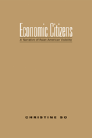

In narratives dominated by money, exchange is the route to Asian American visibility
In narratives dominated by money, exchange is the route to Asian American visibility


 In narratives dominated by money, exchange is the route to Asian American visibility
In narratives dominated by money, exchange is the route to Asian American visibility

|  |
Economic CitizensA Narrative of Asian American VisibilityChristine Sopaper EAN: 978-1-59213-585-1 (ISBN: 1-59213-585-4) |
"An original, engaging, complex, and thought-provoking work. So spells out her theoretical influences in the course of the work, but also argues forcefully for her unique contribution, which is the connection of Marxian exchange value to the production of Asian American subjectivity. So is clearly marking out a new territory, exploring a set of literary texts that have not been addressed before."
—Viet Nguyen, University of Southern California and author of Race and Resistance: Literature and Politics in Asian America
In the past fifty years, according to Christine So, the narratives of many popular Asian American books have been dominated by economic questions-what money can buy, how money is lost, how money is circulated, and what labor or objects are worth. Focusing on books that have achieved mainstream popularity, Economic Citizens unveils the logic of economic exchange that determined Asian Americans’ transnational migrations and national belonging.
With penetrating insight, So examines literary works that have been successful in the U.S. marketplace but have been read previously by critics largely as narratives of alienation or assimilation, including Fifth Chinese Daughter, Flower Drum Song, Falling Leaves and Turning Japanese. In contrast to other studies that have focused on the marginalization of Asian Americans, Economic Citizens examines how Asian Americans have entered into the public sphere.
Excerpt available at www.temple.edu/tempress
"Economic Citizens contributes to current Asian American cultural criticism by identifying the language of economic exchange as a negotiating strategy in Asian American writing. So helps demystify the mistaken belief that race, gender, and class differences can by themselves refute the coercive force of commercial market, and calls attention to the disjunction between what she considers ‘a universal logic’ of economic exchange and the material circumstantiality of particular Asian American experiences."
—Jinqi Ling, University of California, Los Angeles, and author of Narrating Nationalisms: Ideology and Form in Asian American Literature
"So carefully maps out the economic concerns and practices that inform both the themes and actions of literary narratives, and the production, circulation, and consumption of Asian American writing....So's arguments and discussion of the narratives and logics of economic exchange are compelling... Economic Citizens is an important contribution to Asian American literary studies for precisely this reason: So offers an analytical framework that may be applied across the diversity of Asian American writing."
— College Literature
"So deftly discusses how ‘racialized identities are constructed through the machine of capital’ and how ‘economics itself is racialized.’ Through the logic of economic exchange, So re-examines numerous ‘highly commodifiable’ Asian American novels once dismissed by critics for their assimilation bent."
—The Journal of Asian American Studies
"With its superb close readings, Economic Citizens is a well-argued, tightly defined work of criticism. This book will stimulate more thought-provoking research at the intersection of literature and economics in Asian American, American, and ethnic studies."
—MELUS
Acknowledgments
Introduction
1. The Promise of Exchange: Production, Circulation, and Consumption within Chinatown Ethnographies
2. The Universality of Exchange: Japanese American Travel Narratives and the Emergence of the Global Citizen
3. The Embodiment of Exchange: Asian Mail-Order Brides, the Threat of Global Capitalism, and the Rescue of the U.S. Nation-State
4. The Logic of Exchange: Ordering the Chaos of Twentieth-Century Chinese Women’s History
Notes
References
Index
Christine So is Associate Professor of English at Georgetown University.
Asian American Studies
American Studies
Literature and Drama
© 2015 Temple University. All Rights Reserved. This page: http://www.temple.edu/tempress/titles/1889_reg.html.